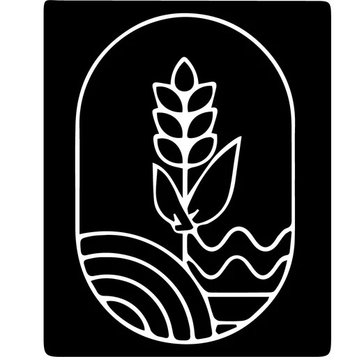
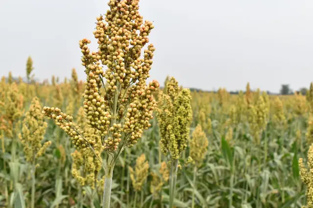
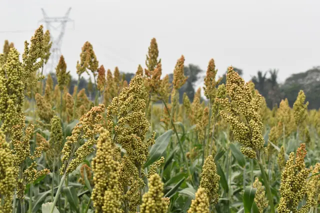
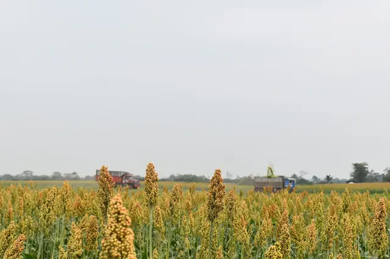
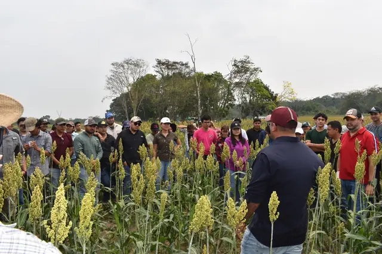
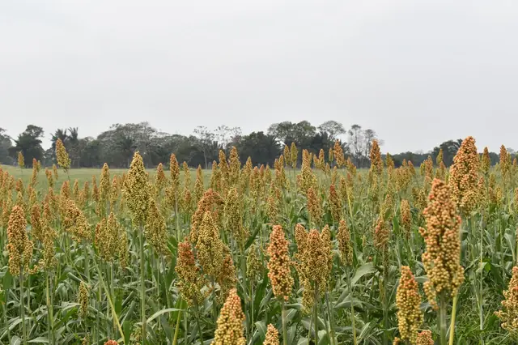
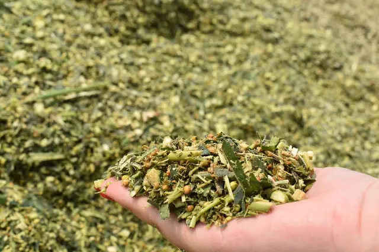
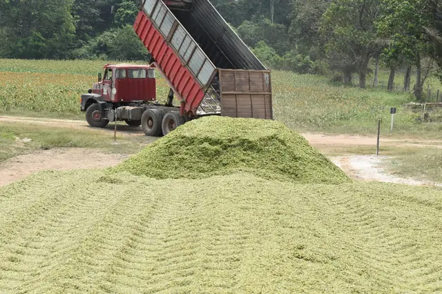

Ensilados Santa Cruz
Productores y asesores en alimentación sostenible para ganado bovino, camélido y equino.

Productores y asesores en alimentación sostenible para ganado bovino, camélido y equino.
Producimos maíz y sorgo para ensilar y asesoramos a ganaderos en la alimentación de sus animales.







Foto 1 de 7
Silo de maíz BM709: materia seca 35,16 %, proteína bruta 6,34 %. Excelente para engorde, adecuado para lechería.
Escríbenos por WhatsApp para cotizar o pedir asesoría.